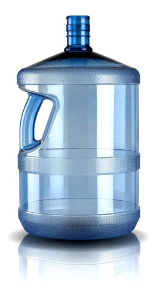
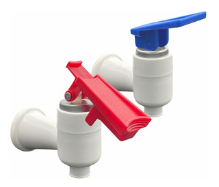
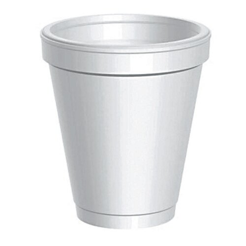
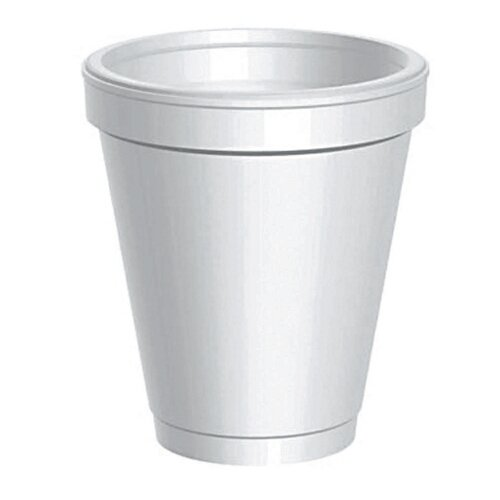
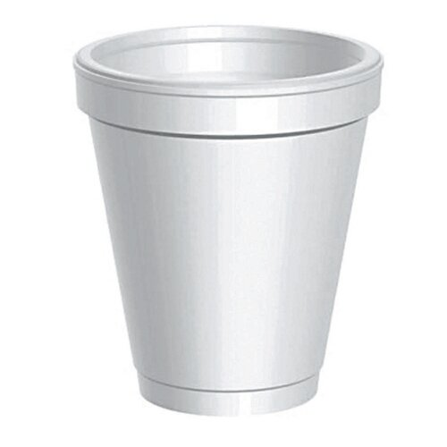

El agua filtrada más pura
Más de 20 años al servicio de nuestros clientes
Contamos con los mejores y más eficientes dispensers frío/calor de última tecnología, importados desde Japón. Nuestros bidones son de policarbonato con manijas, y nuestros repartos cubren todas las zonas de la ciudad.
Productos de primera calidad al mejor precio
Conozca nuestra grilla de productos haciendo click aquí

 

